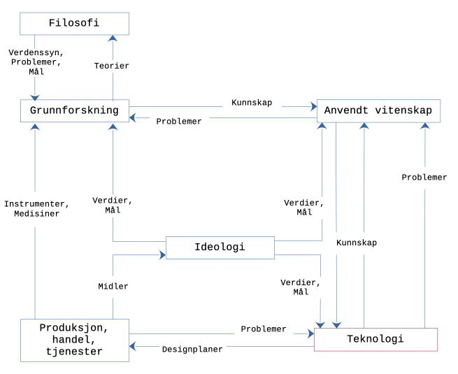

Lecture 1 notes
ICA 1
ICA - In-Class Activity
- Make groups of 3-5.
- Task: design a value transition system to reflect the intellectual contributions of the group members (called society) in intellectual group tasks in a learning environment. The requirement is that any exchange on any asset can only happen electronically. Assume that you have sufficient resources available as a system of energy supply, storage and networking infrastructure available. This system can also be quantified (i.e. you can put a number on the energy consumption for sending N bytes through the network or for storing bytes/qubits (relatively) temporarily.
- How can you define the affiliation to the group? Do you need a contract? What should that contract contain? Should it be based on some existing artifact or several artifacts (of Law)? Could you design your own (inside the society) system of laws? Should it be in some way connected to the existing system (of Law)? Should you define any positions in your society? If yes, would all or some of the position comply to some rules and regulations (the Law)?
- How would you define an asset in your society? For example, can an uttered sentence, written sentence, sequence of bodily guesture, sequence of bytes, algorithm, song, movie, video be an asset? How would you value the assets in your society?
- How would you define success in your society? How would you define a "healthy" society What mechanisms can you imagine you might need to keep your society successful in a "healthy equilibrium"
- How would you define accessibility from outside? How can members of other societies access, join, participate in your society?
- Do you need any type of secrecy in your society and regarding the outside world?
- Can you imagine any links to the real world assets (real things in the sense of realism)?
- How would you start/bootstrap your society (remember it can exist only in the electronical space)?
- Which tokens would you need to keep transition of assets going (incentives? punishment?)?
Have your ever thought ...
... it would be truly unreasonable for an individual to plan to reform a state by changing it from the foundations up, overturning it in order to rebuild it; or to plan to reform the content of the sciences or the established ways of teaching them in the schools; An emerging hypothesis in crypto-literature states that the distributed ledger technology may assist charitable organizations in promoting greater stakeholder trust in their donation allocation activities. (Christie, 2020) In recent years, the digital economy has experienced a growing number of transactions. Traditional dispute resolution methods such as court and international arbitration are ineffective for handling a large volume of small value claims across national borders. Decentralized justice is a new approach to online dispute resolution that combines blockchain, crowdsourcing and game theory in order to produce resolution systems which are radically more efficient than existing methods. (Yann Aouidef et al., 2021) A question arises, however, as to whether blockchain technology should be used at all. Some scholars argue that blockchain should only be used, “when multiple mutually mistrusting entities want to interact and change the state of a system, and are not willing to agree on an online trusted third party” (Wüst and Gervais, 2018, p. 46) Otherwise, they suggest the use of a simple database or system already available. Other critics of blockchain argue that at most technology is nothing more than a hyped-up ledger system, claiming that the distributed systems are inefficient in comparison to traditional centralized systems (Yaga et al., 2018). A third criticism of implementing particularly permissionless blockchain is that privacy is limited because anyone can join (Lo et al., 2017). Critics also question the scalability of blockchain, as current systems do not have the same ability to process transactions as mainstream systems (Lo et al., 2017). Nevertheless, blockchains are being considered for various implementations in corporate, civil society, and government sectors. (McNealy, 2021) Figure 1. Specifics of implemented (or prototyped?) voting system in blockchain from (Buhari Ugbede Umar et al., 2022) Figure 2. A world view by Bunge on basic and applied science, and technology. English version from Bunge (2001) Figure 3. A world view by Bunge (2001) on basic and applied science, and technology. /i>
but I thought nevertheless that something radical could be done at the level of personal intellectual hygiene, namely:
Tools

Links
References